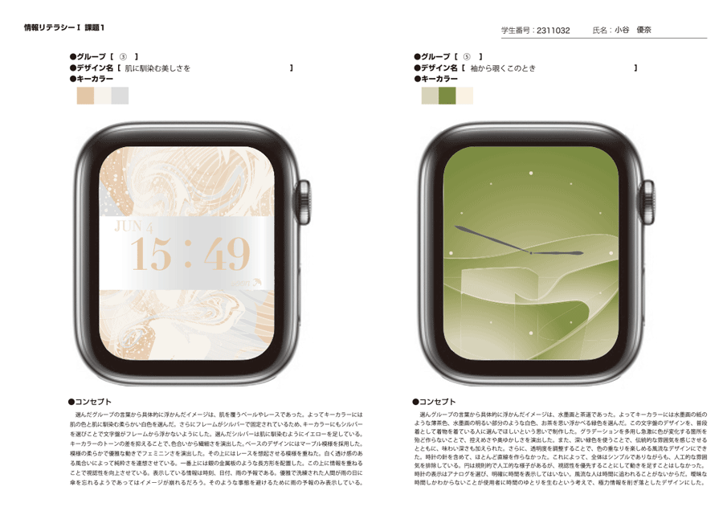
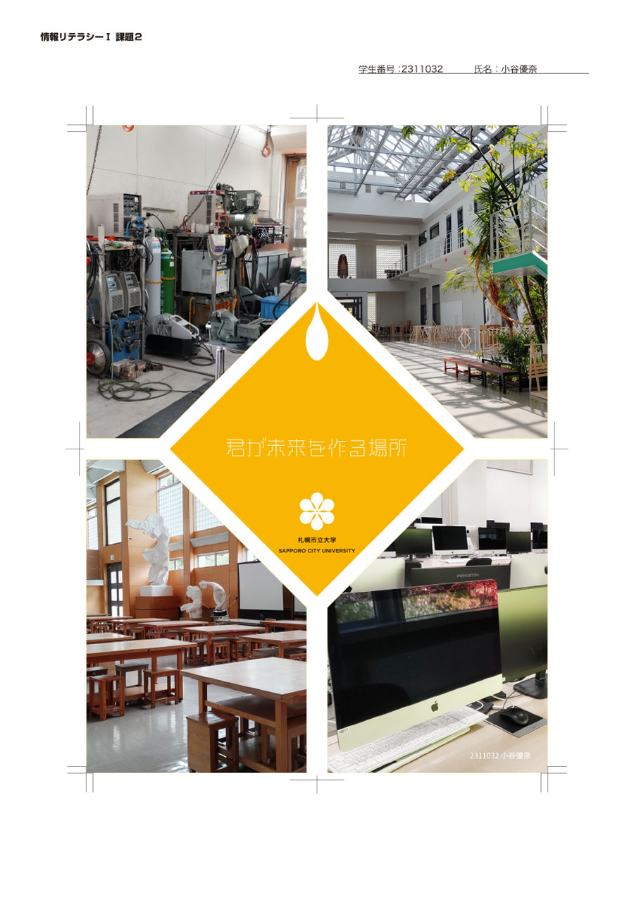

課題1
課題2
様々なデジタル情報を扱うための基礎的事項を学習した上で，コンピュータを利用したデザイン作業において一般的に用いられるフォトレタッチソフト及びドロー系ソフトの基本な活用方法を学習します．適切な画像データの作成方法，正しい印刷データの作成方法などを学び，表現ツールとして自由に使いこなすための基礎力を身につけます．
①デジタルデザインに不可欠なソフトウェアをデザインツールとして自由に使いこなす能力を身に付けること．
②デザイン制作に関連する知識を習得すること．
ファイルの扱いに気を使うことが出来るようになった。ファイルの名前は日本語を避け、小文字の英語と_（アンダーバー）や-（ハイフン）のみでつけるようにすること。カラーモードは印刷するならCMYK、画面上に表示するだけならRGBにすること。また、解像度も印刷機に合わせて適切に設定し、印刷しないなら不必要に解像度を上げないで容量を減らすべきだと学んだ。
課題1では、アナログ時計とデジタル時計の両方で表現することが個人的な目標の一つだったのだが、どちらも特性を活かせたデザインにできた。この課題で初めて自由にイラストレーターを使ったのだが、全てのしたいことはできなかったが、方向性としては望み通りの結果が出せた。しかし、決めたキーワードに完全に沿っているデザインにはできなかったと反省している。自分の好みでキーワードを解釈しすぎていた可能性があるので、今後は他の方の作品も参考にしながら軸がぶれないように気をつけて制作していきたい。
課題2では、印刷物の作り方を学んだ。特にトリムマークの使い方がここで学べたことがとても有益だった。写真がメインのフライヤーというイメージにできたと思う。その点では良くできたと思うが、キャッチコピーの「君が未来を作る場所」という言葉が見づらくなったまま完成させたのは反省点である。デジタル感のあるフォントを使いたかったのだが、キャッチコピーは目に入ることが重要で雰囲気はその次に求めるべきだっただろう。今後はこの反省を活かして、デザインの構成要素に優先順位をつけて制作していきたい。